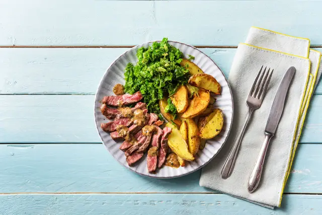

When Steak Met Potatoes
and Creamed Kale with Peppercorn Sauce
Home

- Sirloin Steak
- Kale
- Yukon Gold Potatoes
- Shallot
- Sour Cream
- Black Peppercorns
- Beef Stock Concentrate
- Vegetable Oil
- Butter
- Salt and Pepper
- Wash and dry all produce. Preheat oven to 400 degrees. Cut potatoes into ¾-inch-thick wedges. Remove and discard
stems and ribs from kale. Chop or tear leaves into 1-inch pieces. Halve, peel, and mince shallot. Use a mallet or
heavy pan to pound and crush peppercorns in their bag until coarsely ground.
- Toss potatoes with a drizzle of oil and a pinch of salt and pepper on a baking sheet or baking dish. Roast in
oven until tender and lightly browned, 30-35 minutes, tossing halfway through.
- Melt 1 TBSP butter in a large pan over medium heat. Add kale and a splash of water. Cook until leaves are
completely wilted and very tender, 4-5 minutes. Season with salt and pepper. Remove from heat, keeping kale in
pan.
- Heat a drizzle of oil in a medium pan over medium-high heat. Season steak all over with salt and pepper. Add to
pan and cook to desired doneness, 4-7 minutes per side. Remove from pan and set aside to rest, 5 minutes.
- Heat another drizzle of oil in same pan. Add shallot and ¼ tsp crushed peppercorns (more or less to taste). Cook
until shallots are soft, 2-3 minutes. Add stock concentrate and ½ cup water. Scrape up any browned bits from pan.
Bring to a simmer and let bubble until reduced by half, 2-3 minutes. Remove pan from heat, then stir in half the
sour cream.
- Return pan with kale to medium heat. When just warmed, remove from heat and stir in remaining sour cream. Season
with salt and pepper. Slice steak against the grain. Divide between plates and serve next to potatoes and kale.
Drizzle with sauce.